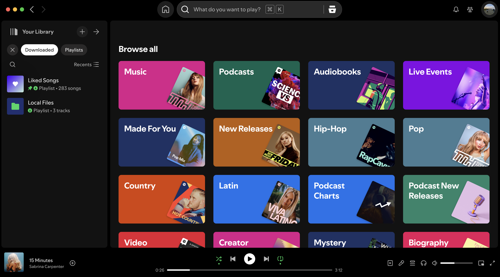
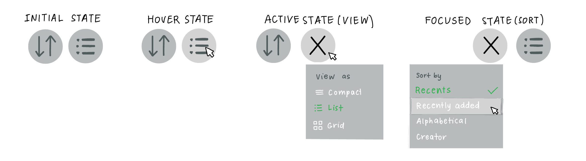

In today's world where you can find anything and everything online, dropdown menus have become essential for categorizing data and simplifying UIs. Although they are vital to many interfaces, they can be suboptimal for many users. In this project, I aimed to create a better dropdown menu for a popular website. Keeping in mind accessibility for a range of users.
| Google Drive | Spotify | ||
|---|---|---|---|
| Mouse Input | The dropdown activates when the user presses on the menu item. It doesn't appear on the hover, which makes the page neater. It also doesn't disappear when the user's mouse hovers off the menu. | This acts similarly to the Google Drive one. However, there are few indications that this is actually a dropdown. The text is not stylized like the other buttons on the page and its grey color doesn't draw any attention to it. | On Instagram's webpage, the Create dropdown is on the left side of the page with many other menu items. Most of the other items in this menu are not dropdowns, so it may not be immediately clear that this button is a dropdown to a new user. |
| Keyboard Input | User's using the keyboard input instead of a mouse or trackpad can easily tab to the dropdown and press enter to expand the dropdown. It's nice that the dropdown doesn't automatically open when a user is navigating the site as it saves energy for the user. | On both the Spotify app and webpage, users can tab to this Recents dropdown to arrange their playlists to their preferences. Once the dropdown is opened the whole inner section is highlighted, which seems like a flaw since pressing enter in this state doesn't change anything. | Just like the other two examples, the Instagram website can be easily tabbed through to reach this dropdown. Once a user gets there, they simply click enter to open the menu options, which seems like the standard for applications. |
| Touch Input | Pressing the same button on the Google Drive app causes a menu to open up from the bottom of the page, similar to the image from the Instagram mobile application. There is a clear close button since the menu doesn't open near the Type button. | The Spotify app has split the Sort By and View As buttons into two separate buttons on their mobile application. The Sort By button similarly opens a menu from the bottom of the screen, while the View As button works as a toggle between the list and grid states. | The plus button opens the Create menu at the bottom of the screen. There are many more options to pick from on the mobile application than on the webstie, which shows that this application is meant to be used on a mobile device. |
| Google Drive | Spotify | ||
|---|---|---|---|
| Mouse Input | The dropdown menu button becomes lighter on hover to indicate that it should be pressed. Similarly the items in the menu--once opened--also become lighter upon hover to indicate they should be pressed. | Although the menu is not button shaped, the text and symbol turn white and expand a little on hover to let the user know they are clickable. However, I feel this can be easily missed if someone never hovers on it. | The menu item similarly lightens on hover to show interactivity. The dropdown being part of another menu covers some of the other options in the menu. |
| Keyboard Input | As the user navigates the page items become lighter and get a blue border around them. It works exactly the same as the mouse input which is good. | Both the website and the desktop app make the button text white and expand the icon slightly just as the mouse input reaction. | On Instagram's website, instead of lighting the dropdown menu on tab, it just puts the blue border around the button. This is a little less clear than the lightening of the element. |
| Touch Input | Since there is no hover state for mobile applications, the state of the dropdown meny only changes upon press. | As mentioned, this button is split into two different ones on the mobile application, which react to touch. | Similarly to the other two, the menu only react to presss since there is no hover state. |
The dropdown I decided to redesign is the Spotify one. I think that the current design is unintuitive. Below is an image of the entire Spotify desktop app, and we can see that the Recents button on the left is quite hidden. From not looking like a button to the weird mix of an unrelated text with an unrelated icon to it having two uses, I think there is a design that could be much better.
I believe that the mobile app, making this dropdown into two separate buttons/dropdowns is really effective. It allows each button to standalone from the other and function separately. To maintain continuity, I decided to use two icons instead of words, since that matches the search icon on the left side. I used a pretty universal sort icon and kept the same view icon as in the original design. Once either button is clicked, they turn into Xs, to indicate that the user can click (or enter) on it to collapse the dropdown.
I think dropdown menus are generally pretty accessible. It becomes harder to traverse menus when they contain a lot of subcategories, like in the Google Drive example. Even more for keyboard users since they have to use the arrow keys to select what they want instead of simply moving a mouse. However, if a meny contains really small menu items, a mouse user could easily click the wrong item due to a mouse slip. Instead using a keyboard would be more accurate at preventing misclicks in this scenario. There should be more intuitive ways to close a dropdown menu, than just clicking off the menu. For this reason, I included a collapse button in my redesign. Looking at the applications I chose to disect for the input and output comparison, both Google Drive seems to have optimized for the mouse user, Spotify equally for mouse and touch, while Instagram has very clearly optimized for the touch user. This makes a lot of sense when you consider who uses these applications and when. Google Drive is primarily used on computers, Spotify is used largely on computers and phones, and Instagram almost solely on phones.